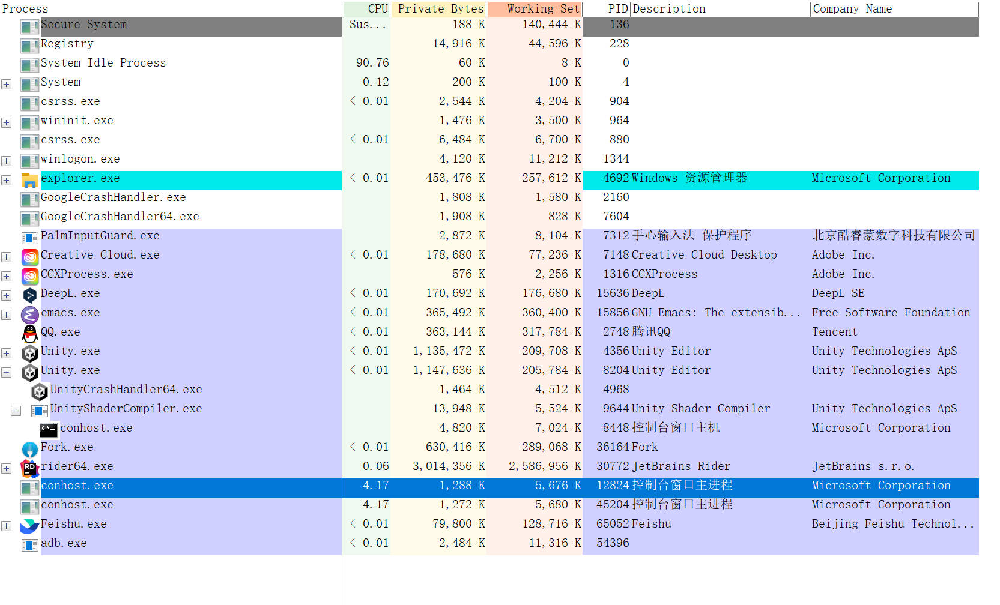
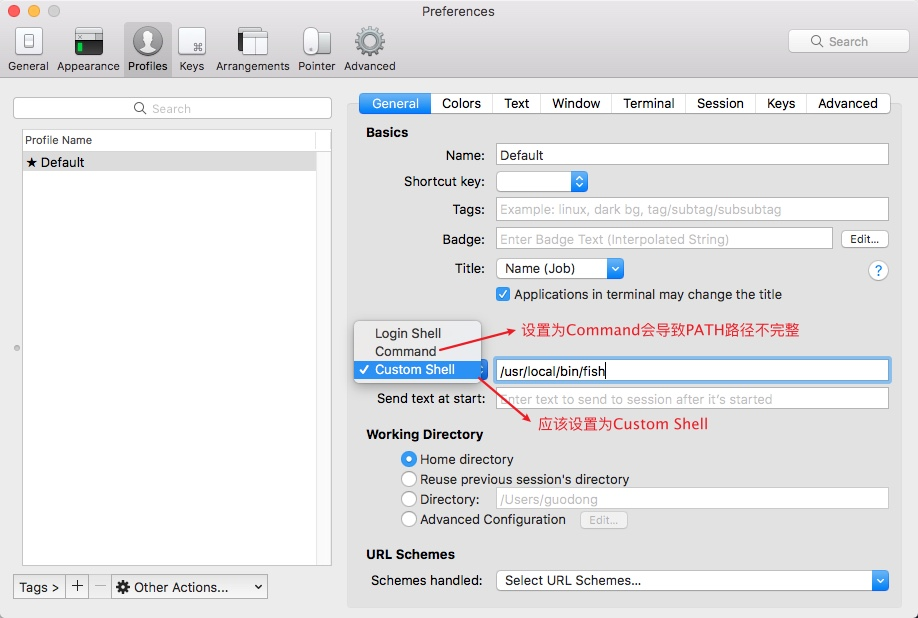

Init My Core
Table of Contents
- InitBase
- Init IME(Input Method Editor)
- Init Double Commander
- InitEmacs
- 准备工作
- 安装 spacemacs
- 初始化配置
- 问题修复
- Emacs 性能分析
- Common Error
- spacemacs 安装插件失败
- 修改 tab 显示
- 自动补全支持
- spacemacs python layer
- spacemacs Error (use-package): winum :config: Symbol’s value as variable is void: winum-assign-functions
- org-mode org-roam
- 插入模板失败
- 配置 org-publish-project-alist 中的 html-head 时，提示 Wrong type: sequencep 错误
- Please adjust ‘imagemagick’ part of ‘org-preview-latex-process-alist’.
- org-mode 代码块缩进显示错误
- org-mode source code edit 和 org 中缩进不一致
- org-mode subscripts and superscripts display error
- Windows 10: No EmacSQL SQLite binary available
- user-error: Customize ‘evil-undo-system’ for redo functionality. (spacemacs redo 失效)
- eshell
- Init MapKeyboard
- InitVim
- Shell Tools
- Git Config
- SSH Config
- SSH Config 文件配置
- 安装配置
- Windows SSH: Permissions for 'private-key' are too open
- Load key "/.ssh/id_rsa": invalid format
- 显示 public key 的 SHA256
- SourceTree 公钥配置
- 已经配置了 ssh，每次 push 依然需要填写用户名和密码
- Permission denied(publickey, gssapi-keyex,gssapi-with-mic) fatal:Could not read from remote repository
- You're using an RSA key with SHA-1, which is no longer allowed.
- InitLoopLife
- InitVimDesktop
基础工具的初始化. IDE 工具初始化在 IDE Tools
<!– more –>
InitBase
Common
创建目录结构
下面列出来初始化新机器，需要 copy 的文件和目录
├── Applications │ ├── emacs │ ├── msys64 │ └── U ├── Documents │ ├── MyCore │ ├── MyCloud │ ├── MyProject │ │ ├── Private │ │ ├── Public │ │ │ └── wolfand11 │ │ │ ├── _post │ │ │ └── _site │ │ ├── StudyProjects │ │ │ ├── Houdini │ │ │ └── Blender │ │ └── Test │ │ └── UnityEmpty │ ├── MyResource │ │ ├── QQSetings │ │ └── ListarySettings │ ├── MySDK │ ├── MyBook │ ├── MyShared │ │ ├── Temp ├── .pyenv ├── .emacs.d ├── .ssh ├── _vimrc ├── .emacs.el ├── .emacs.local.el ├── .spacemacs ├── .zshrc ├── .zshrc.local
上面的步骤相当于执行了下面的操作：
- emacs 安装和初始化
- babun 初始化(未安装)
- vim 初始化（未安装）
安装 git
emacs 插件更新，MyCore 等都需要使用到 git.
安装 fish shell
初始化工作涉及到 git 命令行操作，可以先安装 fish shell，方便操作。
Windows
hosts
cd-config cp ./Hosts/hosts.bak /c/Windows/System32/drivers/etc/hosts
window 账号无法登录
117.28.245.88 logincdn.msauth.net 117.28.245.88 login.live.com 117.28.245.88 account.live.com 117.28.245.88 acctcdn.msauth.net
github 访问速度提升
Init IME(Input Method Editor)
Microsoft Pinyin
Windows 平台直接使用微软拼音输入法。将以下输入法快捷键关闭：
Ctrl + Space / vs complete
Ctrl + . / vs quick actions
Ctrl + Shift + F // vs search
Rime
安装配置
# osx cp ./RimeConfig/default.custom.yaml ~/Library/Rime/default.custom.yaml
- Rime 小狼豪 鼠须管 输入法配置记 https://chenhe.me/post/oh-my-rime/ 有道云笔记备份
使用
| 功能 | 快捷键 | OS |
|---|---|---|
| 切换简体繁体 | Ctrl+` | osx |
Init Double Commander
跨平台（windows osx linux）的目录管理器
- doublecmd 官网 https://doublecmd.sourceforge.io/
- doublecmd dark theme 版本 https://doublecmd.sourceforge.io/site/eng/snapshots.php
- doublecmd commondline doc https://doublecmd.github.io/doc/en/commandline.html
安装
安装 dark theme 版本的 doublecmd https://doublecmd.sourceforge.io/site/eng/snapshots.php
安装配置 dcvim 插件
配置
安装配置
- 关闭 doublecmd (TIPS： 一定要关闭 doublecmd 再执行下面步骤，否则 doublecmd 关闭时会覆盖 doublecmd.xml 文件)
- 将对应的 doublecmd-xxx.xml 从 MyCore/Config/DCConfig 目录 Copy 到 doublecmd 的 Config 目录下，替换 doublecmd.xml 文件
base
| 移除 splash screen | Options/Miscellaneous/Show splash screen |
| 只显示一个 doublecmd | Options/Behaviors/Allow only one copy of DC at a time |
| 设置 Configuration 路径 | 保持默认的 Configuration 路径就好 |
| 设置文件详细信息-时间 | Options/Files views/Formatting/Date and time format:M/d/yyyy hh:nn |
| 设置文件 Column 尺寸 | Options/Files views/Columns/Auto fill columns 勾选 |
| 设置文件 Column | Options/Files views/Columns/Custom columns |
| 让 icon 显示整齐好看一些 | Options/Show icons to the left of the filename/Only standard icons |
| 设置布局(隐藏 Toolbar 等) | Options/Layout |
| 设置字体 | Options/Font |
设置 Terminal
Options/Tools/Terminal/Command for just running terminal
Windows
Command: D:\Applications\ConEmu\ConEmu64.exe
Parameters: {Fish::Msys2-64} -cur_console:n
osx
Command: /Applications/iTerm.app
Parameters: TODO
dc vim plugin
windows
- close Double Commander
- make sure lua5.1.dll in DC folder
- clone dcvim to config directory (default is C:\Users\admin\AppData\Roaming\doublecmd\)
Tips: 可以 clone native_navigation 分支 - copy dcvim\mswin\toolbar_items.xml into C:\Users\admin\AppData\Roaming\doublecmd\doublecmd.xml.
Tips: copy into the section enclosed by <Toolbars><MainToolbar><Row> tags - copy dcvim.scf to C:\Users\admin\AppData\Roaming\doublecmd\
- Options/Keys/Letters to None
- Options/Keys/Hotkeys/Shortcut file to dcvim.scf
osx and linux
- brew install xdotool
- brew install lua@5.1
- copy dcvim to config directory (default is /Users/admin/Library/Preferences/doublecmd)
- copy dcvim.scf to /Users/admin/Library/Preferences/doublecmd
- Options/Keys/Letters to None
- Options/Keys/Hotkeys/Shortcut file to dcvim.scf
快捷键
| u | switch panel |
| g / | goto root |
| g h | goto home |
| g o | open option panel |
| g t | open termial from cur dir |
| : | command line |
| : c | goto c: |
| : d | goto d: |
| `` | 显示 hotlist |
| nd | Create Directory |
| nf | Create File |
| rr | Rename |
| yf | copy full path |
| yn | copy name only |
| Ctrl+Shift+F8 | 显示 TreeView cm_TreeView |
| Shift+Tab | cm_FocusTreeView |
| Q | quit double commander |
command line 中可以执行 double command 的命令，如 cm_View 预览文件，cm_TreeView 显示 TreeView
InitEmacs
准备工作
安装 emacs
配置以管理员权限打开 emacs
这样 emacs 就可以编辑系统文件了。Windows 平台配置 runemacs.exe 就可以了。
这会导致拖动文件到 emacs 失效。可以只在编辑系统文件的时候使用管理员权限打开 emacs。
安装配置字体
SourceCodePro
JetBrains Mono (使用 JetBrains Mono 代替 SourceCodePro)
微软雅黑
Window 系统在 C:\Windows\Fonts\ 目录查看所有安装的字体
M-x describe-font 可以查看指定字体的信息
M-x describe-fontset 可以查看当前 buffer 使用的字体信息
目前 JetBrains Mono-14 MicrosoftYaHei-16 可以达到等宽效果，其他字号无法实现等宽。
Tips: 配置中使用的字体名字需要和字体名字一致。否则 Emacs 初始化日志中会提示字体不存在。
Windows 设置 HOME 环境变量
设置 HOME 环境变量为 D:\
emacs 配置会放置到 D:/Documents/MyCore 下面
Windows 安装 shell
安装 python 环境
使用 python layer 需要安装 pip。python 安装请参考下面文章：
Python 环境安装
TAGS 支持
ctags 支持
Universal Ctags
- windows
下面地址可以在线编译 universal-ctags 并下载编译好的文件。
https://ci.appveyor.com/project/masatake/ctags/branch/master/job/yjgxuou78st55ik4/artifacts
etags 支持
etags 比较弱可以放弃不用
osx 配置
使用 brew 进行安装
使用 which/where 查看 etags 路径
windows
windows 下 ctags 放置在 D:\Applications\emacs\bin,在 PATH 环境变量中添加该路径即可,需要注意的是该配置要放到自己安装的 ctags 路径之后，否则会默认使用 emacs 目录下的 ctags。
gtags 支持
global
- 安装
- global 安装
osx 下安装
# step 1 install GNU GLOBAL brew install global #下面的命令指定安装支持 pygments 和 ctags 的 global #brew install global --with-pygments --with-ctags # step 2 check global version global --version # ==> global (GNU GLOBAL) 6.5.4 which global # ==> /usr/local/bin/global
windows 下安装
下载地址 http://adoxa.altervista.org/global/
安装 GLOBAL 到 D:\Applications\GLOBAL 目录下
环境变量 PATH 中添加 D:\Applications\GLOBAL\bin
- pygments
osx 下安装
sudo pip install Pygments pygmentize --version where pygmentize
windows 下安装
easy_install Pygments
- global 安装
- 配置
# 在 ~/Documents/MyCore/Config/OnMyZshConfig/my_zshrc_config 文件中添加下面代码 export GTAGSLABEL=pygments # windows config cp dot.win.globalrc ~/.globalrc # osx or linux config cp dot.globalrc ~/.globalrc
- globalrc 配置说明
https://www.gnu.org/software/global/globaldoc_toc.html
以‘#’开头的行为注释，一个记录由一个或多个字段组成，字段之间通过‘:’分割，以换行为结束。第一个字段必须为一个标签名称，剩余的字段为变量定义.
有三种类型的变量：
- Boolean: This type has no value; existence of variable means true else false.
- Number: This type has a number value after ’#’.
- String: This type has a string value after ’=’.
Tips:
如果数据中包含‘:’或者是换行，你应该通过\\来引用它。
当包含多个定义时，前面的定义被采纳。langmap gtags_parser 属于例外,他们的定义会被连接在一起。
下面的代码指定了 exuberant-ctags 程序的路径 :ctagscom=$HOME/Applications/ctags/exuberant-ctags/ctags:\
- Boolean: This type has no value; existence of variable means true else false.
- 验证是否配置成功
gtags --explain - File 'GPATH' is skipped because it is a tag file. - File 'GRTAGS' is skipped because it is a tag file. - File 'GTAGS' is skipped because it is a tag file. - File 'test.py' is handled as follows: suffix: |.py| language: |Python| parser: |parser| library: |pygments-parser|
- globalrc 配置说明
- global 使用
global 教程
https://www.gnu.org/software/global/globaldoc_toc.html
# 生成 TAGS gtags # 查询 Print1_y 的定义 global -x Print1_y # ==> Print1_y 1 y.cpp void Print1_y() # 查询 Print1_y 的引用 global -xr Print1_x # ==> Print1_y 10 x.cpp Print1_y(); # 使用正则表达式进行查询 # The ‘-s’ command locates symbols which are not defined in ‘GTAGS’. global -sx 'Print[12].*' # ==> Print1_a 1 a.lua function Print1_a() # ==> Print1_b 1 b.lua function Print1_b() # ==> Print2_a 4 a.lua function Print2_a() # ==> Print2_a 9 b.lua Print2_a() # ==> Print2_b 9 a.lua Print2_b() # ==> Print2_b 4 b.lua function Print2_b()
- 参考资料
- global 安装配置 https://github.com/leoliu/ggtags
- global 官网 http://www.gnu.org/software/global/global.html
- global 安装配置 https://github.com/leoliu/ggtags
plantuml 支持
安装 graphviz
- osx
# 安装 graphviz brew install graphviz # 查看 graphviz 安装路径 brew info graphviz # 设置环境变量 export GRAPHVIZ_DOT=/usr/local/bin/dot
- windows
安装 graphviz http://www.graphviz.org/Download_windows.php 设置环境变量 My Computer/Properties/Advanced/Environment Variables Create GRAPHVIZ_DOT User Variables GRAPHVIZ_DOT = D:\Applications\Graphviz\bin\dot.exe
安装 plantuml
- 下载 plantuml.jar 到 ~/Documents/MyCore/Config/EmacsConfig/Resource 目录下
测试
java -jar plantuml.jar -version
问题修复
- Error: unable to access jarfile
windows 下选中 plantuml.jar 鼠标右键->属性->解除锁定
修改 puml-mode.el 文件中 puml-preview 函数内容如下：
;; old (let ((ps (start-process "PUML" buf "java" "-jar" (shell-quote-argument puml-plantuml-jar-path) (puml-output-type-opt) "-p"))) ;; new (let ((ps (start-process "PUML" buf "java" "-jar" (convert-standard-filename puml-plantuml-jar-path) (puml-output-type-opt) "-p")))
org latex 预览支持
安装 MikTeX
安装 imagemagick
安装时选择将 imagemagick 添加到环境变量 Path 中
安装 spacemacs
# step0 安装 emacs emacs 安装参考:http://emacs.sexy/ # step1 克隆 spacemacs 到~/.emacs.d mv ~/.emacs.d ~/.emacs.d.bak git clone https://github.com/syl20bnr/spacemacs ~/.emacs.d # step2 克隆插件到~/.emacs.d/elpa git clone https://github.com/wolfand11/_spacemacs_elpa.git ~/.emacs.d/elpa
初始化配置
配置说明
~\DOCUMENTS\MYCORE\CONFIG\EMACSCONFIG
| custom_init.el // 自定义初始化 用于调用 Config 目录下的配置脚本
| dot.emacs.el // 跨平台的.emacs 文件
| dot.emacs.local.el // 本地特化的 emacs 配置
| dot.globalrc // global 的配置文件
| dot.spacemacs.el // spacemacs 配置
| main.el // emacs 配置入口
|
+---Config
| init-environment-variable.el // emacs 的环境变量
| init-plug-org.el // org 插件配置 -- 目前已经移到 wolfand11 spacemacs 插件中
| init-utility-function.el // 功能函数 -- 目前已经移到 wolfand11 spacemacs 插件中
|
+---Plugin
| \---wolfand11 // wolfand11 spacemacs 插件
| config.el
| funcs.el
| packages.el
|
\---Resource
\---alias // eshell alias
\---snippets // snippets
\---org-mode
blog.snippet
eg.snippet
spacemacs 配置
init-environment-variable.el
移除其中环境变量设置，其会导致很厉害的卡顿
dot.spacemacs 优化
;; 设置custom-layer-path dotspacemacs-configuration-layer-path `(,my_layer_path) ;; List of configuration layers to load. dotspacemacs-configuration-layers '( ;; ---------------------------------------------------------------- ;; Example of useful layers you may want to use right away. ;; Uncomment some layer names and press `SPC f e R' (Vim style) or ;; `M-m f e R' (Emacs style) to install them. ;; ---------------------------------------------------------------- (auto-completion :variables ;; 设置自定义snippets auto-completion-private-snippets-directory (concat home-path "/Documents/MyCore/Config/EmacsConfig/Resource/snippets") spacemacs-default-company-backends '(company-files company-capf) ;; 输入3个字母后才出现补全提示 auto-completion-minimum-prefix-length 3 ;; 等待0.5秒后才执行补全 auto-completion-idle-delay 0.5) ;; better-defaults ;; 自动输入括号 spacemacs-editing emacs-lisp chinese ;; 直接使用Terminal操作git ;; git ;; version-control ;; 用ivy代替helm, helm太卡了 ;;helm ivy ;; 公用dired-buffer避免内存增长 (vinegar :variables vinegar-reuse-dired-buffer nil) ;; lsp ;; markdown multiple-cursors org ;; (shell :variables ;; shell-default-height 30 ;; shell-default-position 'bottom) ;; spell-checking ;; syntax-checking (treemacs :variables treemacs-use-follow-mode t) ) ;; 显示 spacemacs logo dotspacemacs-startup-banner 'official ;; 编辑风格 One of `vim', `emacs' or `hybrid'. dotspacemacs-editing-style 'hybrid ;; 设置行号显示 dotspacemacs-line-numbers '(:relative nil :visual nil :disabled-for-modes dired-mode doc-view-mode markdown-mode org-mode pdf-view-mode :size-limit-kb 1000) ;; 设置字体大小 dotspacemacs-default-font '("JetBrains Mono" :size 14.0 :weight normal :width normal) (defun dotspacemacs/user-config () "Configuration for user code: This function is called at the very end of Spacemacs startup, after layer configuration. Put your configuration code here, except for variables that should be set before packages are loaded." (setq powerline-default-separator 'bar) ;; 设置中文字体 (spacemacs//set-monospaced-font "JetBrains Mono" "Microsoft YaHei" 14 16) (setq dotspacemacs-enable-paste-micro-state t) ;; 设置Tab对应的空格数量 (setq tab-width 4) (setq default-tab-width 4) ;; org-mode example code 插入支持 (require 'org-tempo))
wolfand11 plugin 添加插件
;; packages.el 文件中添加如下内容 ;; wolfand11-packages中添加所需插件 (setq wolfand11-packages '(;;...... org-static-blog ;; ...... )) ;; ;; 添加 init函数，表示wolfand11负责按照该插件，并且负责一开始的启动 ;; 如果没有该函数，插件会被spacemacs删除 (defun wolfand11/init-org-static-blog() (use-package org-static-blog :init (setq org-static-blog-publish-title "wolfand11's blog") (setq org-static-blog-publish-url "https://wolfand11.gitee.io/") ;; ...... :defer t))
treemacs 配置
treemacs 需要使用 python3
- 统一使用 pyenv 中的 python 环境
安装 python3 到 D:/Applications/treemacs_py3/ 目录 - 在 wolfand11 packages.el 文件中会执行对应的初始化
TODO 目前还没处理 osx 和 linux 上的初始化。
(defun wolfand11/post-init-treemacs () (setq treemacs-python-executable (cond ((string-equal system-type "windows-nt") "~/.pyenv/pyenv-win/shims/python3") ((or (string-equal system-type "darwin") (string-equal system-type "gnu/linux")) nil))))
c/c++ 配置
python
#使用 python layer 需要安装 pip # install python language server package pip install 'python-language-server[all]' # for import sorting pip install pyls-isort # for mypy checking (python 3.4+ is needed) pip install pyls-mypy # for formating with black pip install pyls-black # for detecting the use of deprecated apis pip install pyls-memestra # to use dap-mode for debugging pip install "ptvsd>=4.2"
;; .spacemacs 中python的配置 (python :variables python-pipenv-activate t python-poetry-activate t python-formatter 'black)
Tips: 打开 python 文件的时候，按 I 会提示选择工程路径，否则 lsp 不管用。
安装配置
cp dot.emacs.el ~/.emacs.el # you can change .emacs.local context for local cp dot.emacs.local.el ~/.emacs.local.el cp dot.spacemacs.el ~/.spacemacs # 配置 global cp dot.globalrc ~/.globalrc # 配置 eshell alias # # cp Resource/alias ~/.emacs.d/eshell/ # tips: 经过测试应该copy到下面路径，并且文件中不能有 # 这样的注释 cp Resource/alias ~/.emacs.d/.cache/eshell/
问题修复
Emacs 性能分析
显示加载过程的时间消耗
emacs –timed-requires
分析 CPU 和内存消耗
emacs –profile
最近使用 Spacemacs 的时候，输入代码总是会卡 1 秒多，很不流畅。
可以用下面的命令分析
先启动分析器
M-x profiler-start
选择 cpu
然后输入代码，遇到卡顿了，用下面的命令生成报告
M-x profiler-report
这时查看 report，发现 savehist 消耗的 cpu 最多
现在到.spacemacs 的 user-config ()函数里加上一行代码禁用 savehist-mode
(savehist-mode 0)
M-x profiler-stop 停止 profiler
Common Error
emacs 中命令找不到
查看 exec-path 变量，是否包含了指定命令的路径.
C-h v 可以查看变量信息 C-h f 可以查看函数信息
emacs 命令调用不正确
查看 exec-path 变量中，指定命令是否比同名的另一个命令靠前。
例如：window linux osx 下都有 find 命令，但是他们参数并不同，在 windows 下，要确保 cgwin 的 find 命令要靠前。
browse-url-default-windows-browser: ShellExecute failed: 找不到应用程序
emacs 无法打开 url 链接，报如题错误。
检查系统是否设置了默认浏览器。Win7 控制面板/程序/设置默认程序。将 Chrome 设置为默认程序就可以了。
server-ensure-safe-dir: The directory ‘d:/.emacs.d/server’ is unsafe
修改 d:/.emacs.d/server 文件夹的 owner 为当前登录的用户。
这是因为切换用户后，文件夹所有者不正确。右键点击 ~/.emacs.d/server 文件夹，在安全(Security)选项卡中，点击高级(Advanced)按钮，选中所有者(Owner)选项卡，修改文件夹所有者为你当前的用户就可以了。
spacemacs 安装插件失败
An error occurred while installing xxxx
在 CMD，或 Shell 中使用下面命令可以查看具体出错信息
emacs –debug-init –insecure
部分安装问题在如下链接中有描述
MELPA 的包不可见
spacemacs 默认设置是支持 MELPA 和 marmalade 的。请检查.emacs.el 中是不是添加了下面的代码，导致默认设置出错。
(package-initialize)
修改 tab 显示
;; 控制 tab 对应的空格数目 (setq tab-width 4) (setq default-tab-width 4)
lua 模式下代码缩进始终为 2 个空格
这是因为 spacemacs 中特写了 lua-indent-level
直接修改/layers/+lang/lua/packages.el 中 lua-indent-level 的值为 4
自动补全支持
c/c++自动补全支持
(c-c++ :variables c-c++-enable-clang-support t)
lua 自动补全支持
;; config.el 中定义 (spacemacs|defvar-company-backends lua-mode) ;; package.el 中添加 (defun wolfand11/post-init-company () (progn (setq company-minimum-prefix-length 1 company-idle-delay 0.08) (when (configuration-layer/package-usedp 'company) (spacemacs|add-company-hook shell-script-mode) (spacemacs|add-company-hook makefile-bsdmake-mode) (spacemacs|add-company-hook sh-mode) (spacemacs|add-company-hook lua-mode) (spacemacs|add-company-hook nxml-mode) (spacemacs|add-company-hook conf-unix-mode) (spacemacs|add-company-hook json-mode) (spacemacs|add-company-hook graphviz-dot-mode) ) )) (defun wolfand11/post-init-lua-mode () (progn (add-hook 'lua-mode-hook 'evil-matchit-mode) (add-hook 'lua-mode-hook 'smartparens-mode) (setq lua-indent-level 4) ;;; add lua language, basic, string and table keywords. (with-eval-after-load 'lua-mode (require 'company-keywords) (push '(lua-mode "setmetatable" "local" "function" "and" "break" "do" "else" "elseif" "self" "resume" "yield" "end" "false" "for" "function" "goto" "if" "nil" "not" "or" "repeat" "return" "then" "true" "until" "while" "__index" "dofile" "getmetatable" "ipairs" "pairs" "print" "rawget" "status" "rawset" "select" "_G" "assert" "collectgarbage" "error" "pcall" "coroutine" "rawequal" "require" "load" "tostring" "tonumber" "xpcall" "gmatch" "gsub" "rep" "reverse" "sub" "upper" "concat" "pack" "insert" "remove" "unpack" "sort" "lower") company-keywords-alist)) ))
elisp 自动补全错误
(defun wolfand11/post-init-emacs-lisp () (remove-hook 'emacs-lisp-mode-hook 'auto-compile-mode))
Symbol’s value as variable is void: company-backends-xxxx
导出 org 文件为 html 时，会提示这个错误。这是因为 company 配置错误。修改方法如下：
;; 修改 company 配置 (defun wolfand11/post-init-company () (progn (when (configuration-layer/package-usedp 'company) (spacemacs|add-company-backends : modes lua-mode nxml-mode json-mode )) ))
spacemacs python layer
1 使用 python layer 需要安装 pip
spacemacs Error (use-package): winum :config: Symbol’s value as variable is void: winum-assign-functions
错误消息：Error (use-package): winum :config: Symbol’s value as variable is void: winum-assign-functions
需要更新报错的包。执行 M-x package-list-packages 命令，先删除旧版本的 winum 包，然后再安装新版本的 winum。
org-mode org-roam
插入模板失败
org-mode 9.2 版本引入了新机制，使用命令来插入模板。M-x org-insert-structure-template
(defun dotspacemacs/user-config () "Configuration function. This function is called at the very end of Spacemacs initialization after layers configuration." (setq powerline-default-separator 'bar) (spacemacs//set-monospaced-font "JetBrains Mono" "Microsoft YaHei" 14 16) (setq dotspacemacs-enable-paste-micro-state t) (setq tab-width 4) (setq default-tab-width 4) ;;添加下面代码可以让原来的方式依然生效 (require 'org-tempo) )
- spacemacs org-mode begin_src 等模块不能自动补全的问题 https://www.jianshu.com/p/88cc1edb8338
配置 org-publish-project-alist 中的 html-head 时，提示 Wrong type: sequencep 错误
将 wolfand11-org-base-directory wolfand11-org-publishing-directory wolfand11-org-html-head 等的定义放到 config.el 文件中。按照如下方式使用：
("blog-sitemap" :base-directory ,wolfand11-org-base-directory :base-extension "org" :exclude "about.org" :publishing-directory ,wolfand11-org-publishing-directory :recursive nil :publishing-function org-html-publish-to-html :html-link-home ,wolfand11-org-html-link-home :html-link-org-files-as-html org-html-link-org-files-as-html :html-postamble nil :auto-preamble nil :html-head-include-default-style nil :html-head ,wolfand11-org-html-head )
Please adjust ‘imagemagick’ part of ‘org-preview-latex-process-alist’.
情况 1
miktex 没有安装对应的 package 导致，查看 Message Buffer 中信息，找到 latex 对应的日志文件，查看缺少的 package，通过下面命令安装对应 package
:: 安装package mpm.exe --install=grffile :: 卸载 package mpm.exe --uninstall=grffile
org-mode 代码块缩进显示错误
;; Fixed org-mode 默认在source code前加两个空格 (setq org-edit-src-content-indentation 0 ;; Fixed org-mode 代码块超出 begin_src org-src-preserve-indentation t)
org-mode source code edit 和 org 中缩进不一致
执行 M-x untabify，将 tab 转化为 whitespace
org-mode subscripts and superscripts display error
按照下面配置，A_B 不会按照 subscripts 显示，AB 会按照 subscripts 显示。
(setq org-use-sub-superscripts '{}
org-export-with-sub-superscripts '{})
Windows 10: No EmacSQL SQLite binary available
msys2 中安装 gcc, 就可以解决该问题。
user-error: Customize ‘evil-undo-system’ for redo functionality. (spacemacs redo 失效)
首先需要开启 spacemacs-editing layer， 然后在 user-config 添加下面代码：
(global-undo-tree-mode) (evil-set-undo-system 'undo-tree)
eshell
eshell 打开很卡，显示在设置 alias
不要使用下面方式设置 alias，eshell/alias 每执行一次就写一次文件，导致初始化很卡。
(defun wolfand11/post-init-eshell () (progn (defun wolfand11/init-eshell-atlas () ;; shortcut for normal (eval-after-load "em-alias" '(progn (eshell/alias "ll" "ls -lh $*") (eshell/alias "la" "ls -a $*") (eshell/alias "lla" "ls -alh $*") (eshell/alias "ff" "find-file $1"))) ;; shortcut for my toolkit (eval-after-load "em-alias" '(progn (eshell/alias "cd-desktop" "cd ~/Desktop") (eshell/alias "cd-core" "cd ~/Documents/MyCore") (eshell/alias "cd-config" "cd ~/Documents/MyCore/Config") (eshell/alias "cd-doc" "cd ~/Documents/MyCore/Document") (eshell/alias "cd-toolkit" "cd ~/Documents/MyToolkit") (eshell/alias "cd-project" "cd ~/Documents/MyProject") (eshell/alias "cd-blog" "cd ~/Documents/MyProject/Public/wolfand11/_posts") (eshell/alias "cd-study" "cd ~/Documents/MyProject/Public/StudyProjects")))) (wolfand11/init-eshell-atlas)))
Init MapKeyboard
OSX Karabiner
下面配置实现了将 caps lock 替换为 alt(也就是 osx 的 option 键), 将 cmd+d/u 替换为 pagedown/pageup。
cp ./KarabinerConfig/my-osx-karabiner.json ~/.config/karabiner/assets/complex_modifications/
Windows AutoHotKey
TIPS: 使用 mapkeyboard.exe 来进行改键。AutoHotKey 改键对有些应用会有 Bug。
执行 init.ahk 脚本 (点击打开脚本，就会自动执行)
开机自动执行 init.akh 脚本
# 将 init.ahk 的快捷方式复制到下面路径 cp init-shortcut.ahk.lnk "C:\Users\guodong\AppData\Roaming\Microsoft\Windows\Start Menu\Programs\Startup" # 查看自动运行路径下的文件 ls -al 'C:\Users\guodong\AppData\Roaming\Microsoft\Windows\Start Menu\Programs\Startup'
InitVim
安装 vim
osx
https://github.com/macvim-dev/macvim/releases
windows
直接在软件中心搜索安装
初始化配置
cp dot.vimrc ~/.vimrc :: 在 windows 下 vim 的配置为_vimrc cp dot.vimrc ~/_vimrc
Shell Tools
shell env
windows
windows babun
安装
::在 cmd 中运行 install 脚本 install /target D:\Applications\babun
##安装完成后再 shell 中执行下面命令 compinit cp .zcompdump .zcompdump-$HOSTNAME-$ZSH_VERSION
更新
执行.babun 目录下的 update.bat
包管理
pact --help
修改默认 shell
## 显示默认的 shell 默认使用 zsh 作为 shell babun shell ## 修改默认 shell 为 bash babun shell /bin/bash
检查配置
babun check
配置 Terminal 字体大小
点击左上角，弹出菜单后选择 Option 进行设置。
ErrorFixed
- 切换用户后，babun 无法使用 zsh
## 执行下面命令 什么也不显示 babun shell ## 重新安装 babun 后修复该问题
- 安装后默认没有使用 zsh
## 执行下面命令 显示当前 shell 为 /bin/bash babun shell ## 执行下面命令 切换为 zsh babun shell /bin/zsh
- [oh-my-zsh] Insecure completion-dependent directories detected:
修改方案：chmod -R 755 <Insecure completion-dependent directories path>
- 0 [main] zsh 9196 child_info_fork::abort: address space needed by 'langinfo.dll'
powershell
# 在 powershell 中执行下面命令 cp Microsoft.PowerShell_profile.ps1 $profile
msys2
代替 babun。
将 msys2 安装到 D:\Applications\msys64 目录下，init-environment-variable.el 初始化文件中会将 msys2 包含的 bin 目录添加到 emacs 的 exec-path 变量中。
初始化
- 更新 msys2
# 从服务器下载新的软件包数据库（实际上就是下载远程仓库最新软件列表到本地） pacman -Sy # 升级所有已安装的软件包 pacman -Su # 同步非本地(local)软件仓库并升级系统的软件包 pacman -Suy
- 安装 gcc
org-roam 需要使用 gcc 来编译 sqlite3
# 安装gcc pacman -S gcc # 查看 gcc 版本 gcc --version
- 安装 sqlite3
可以访问 svn 的数据库文件
# 安装sqlite3 pacman -S sqlite # 查看 sqlite版本 sqlite3 -v
- 安装 openssh
git 会使用 openssh
pacman -S openssh
- 安装 fish
- 安装 pip
# 安装 pip pacman -S python3-pip pip3 install --upgrade pip # 安装 ranger https://github.com/ranger/ranger pip install ranger-fm # 执行 pyenv rehash pyenv rehash
ERROR
- ERROR : failed to update core (unable to lock database)
# 执行下面操作 手动解锁database rm -f /var/lib/pacman/db.lck # 再执行更新 pacman -Syu
- ERROR : Failed to prepare transaction (could not find database)
# 执行下面命令 pacman -Syy # -S: Sync packages # -yy: refresh package database, force refresh even if local database appears up-to-date
- ERROR : warning: database file for 'clangarm64' does not exist (use '-Sy' to download)
# 执行下面命令 pacman -Syy # -S: Sync packages # -yy: refresh package database, force refresh even if local database appears up-to-date
- ERROR : Missing PATH entries in MSYS2
修改 ConEmu 中 MSYS2 task 的配置如下：
set CHERE_INVOKING=1 & set MSYS2_PATH_TYPE=inherit & set "PATH=%ConEmuDrive%\msys64\usr\bin;%PATH%" & %ConEmuBaseDirShort%\conemu-msys2-64.exe -new_console:p %ConEmuDrive%\msys64\usr\bin\bash.exe --login -i -new_console:C:"%ConEmuDrive%\msys64\msys2.ico"
- ERRPR : 0 [main] conemu-msys2-64 1548 cygwin_exception::open_stackdumpfile: Dumping stack trace to conemu-msys2-64.exe.stackdump
打开 procexp.exe, 将两个 conhost.exe 进程强制杀死就可以了。

osx
iTerm2 配置
从 MyCore/Config/iTerm2Config 导入两个 config。
My-Default-Profile.json 使用默认的 shell
My-Fish-Profile.json 使用默认的 fish shell
package manager
osx
# 安装 homebrew /bin/bash -c "$(curl -fsSL https://raw.githubusercontent.com/Homebrew/install/HEAD/install.sh)"
windows
msys2 使用了包管理软件 pacman
pacman
| pacman -S pack1 pack2 | Sync packages |
| pacman -Syy | refresh package database, force refresh even if local database appears up-to-date, and sync package |
| pacman -S extra/pack1 | install the version from the extra repository |
| pacman -R pack1 | Remove pack1 |
| pacman -Rs pack1 | remove a package and its dependencies which are not required by any other installed package |
| pacman -Syu | update all packages on the system. synchronizes the repository databases and updates the system's packages |
| pacman -Qs pack1 | queries the local package database, whether pack1 exist |
| pacman -Ss pack1 | queries the sync database, whether pack1 exist |
| pactree pack1 | To view the dependency tree of a package |
shell
# 显示当前的shell echo $SHELL # 系统的所有shell cat /etc/shells # 修改shell chsh -s /usr/local/bin/fish
oh-my-zsh 配置
基本安装配置参考 oh-my-zsh 官网:http://ohmyz.sh/ 配置文件列表: dot_zshrc dot_zshrc.custom dot_zshrc.local Soliah.zsh-theme（主题配置） 配置说明: 通用的自定义配置放在 dot_zshrc.custom 中，本地的自定义配置放在 dot_zshrc.local 中， dot_zshrc 会加载 dot_zshrc.custom 和 dot_zshrc.local 调用下面的命令进行配置: cp dot_zshrc ~/.zshrc cp dot_zshrc.local ~/.zshrc.local cp Soliah.zsh-theme ~/.oh-my-zsh/themes/Soliah.zsh-theme
z.lua
# 安装 lua # Windows https://github.com/rjpcomputing/luaforwindows # 安装 z.lua git clone https://github.com/skywind3000/z.lua # 配置 # Windows PowerShell Invoke-Expression (& { (lua D:/Applications/z.lua/z.lua --init powershell) -join "`n" })
fish shell
fish 的配置文件为 ~/.config/fish/config.fish
pacman -S fish
# osx 安裝 fishshell brew install fish # windows msys2 - 参考上面 mys2 初始化部分 pacman -S fish set -Ux PYENV_ROOT /d/.pyenv set -U fish_user_paths $PYENV_ROOT/bin $fish_user_paths ## windows msys2设置默认的shell使用fish shell ## edit /etc/nsswwitch.conf在末尾添加如下内容 db_shell: /usr/bin/fish # 安装配置 cp ./FishConfig/config.fish ~/.config/fish/config.fish # 安装 fisher (fish 的包管理软件) curl -sL https://raw.githubusercontent.com/jorgebucaran/fisher/main/functions/fisher.fish | source && fisher install jorgebucaran/fisher # 安装 fish-pyenv 工具，可以在fish 中使用pyenv fisher install daenney/pyenv # list fisher tools fisher list # 删除 fish-pyenv fisher remove daenney/pyenv
ERROR osx iterm path 路径不完整
iTerm 中设置 shell 错误了。执行下面命令获得 fish 的路径，然后按照下图设置 iTerm
# mac book air上显示路径为 /opt/homebrew/bin/fish which fish

ERROR windows cmd error
msys2 执行 cmd.exe /c "echo hi" 时，会将 /c 替换为 “c:\”，导致错误
tools
asdf
asdf is a tool version manager. 当前不支持 Windows，所以暂时不放弃 pyenv。
安装
# windows ## install dependencies ## 安装 msys2 安装git 安装 fish ## download asdf git clone https://github.com/asdf-vm/asdf.git ~/.asdf --branch v0.10.2 ## 安装asdf ## Add the following to ~/.config/fish/config.fish: ## source ~/.asdf/asdf.fish ## 执行下面命令完成路径映射 mkdir -p ~/.config/fish/completions; and ln -s ~/.asdf/completions/asdf.fish ~/.config/fish/completions ## 检查asdf 版本 asdf version
使用
asdf nodejs
# 安装 asdf-nodejs asdf plugin-add nodejs # 或者 也可以使用下面方法 asdf plugin add nodejs https://github.com/asdf-vm/asdf-nodejs.git # 列出所有版本 nodejs asdf list all nodejs
asdf python
# 安装 asdf-python asdf plugin-add python # 列出所有版本 python asdf list all python # 安装 3.9.4 版本python asdf install python 3.9.4
ranger
从 ranger 返回时，切换到 ranger 所在目录
alias ranger='ranger --choosedir=$HOME/.rangerdir; LASTDIR=`cat $HOME/.rangerdir`; cd "$LASTDIR"'
Git Config
在 shell 中执行下面命令，会将 alias 写入全局的 .gitconfig 文件中
git config --global alias.st status git config --global alias.co checkout git config --global alias.ci commit git config --global alias.br branch git config --global alias.last 'log -1' git config --global alias.unstage 'reset HEAD' git config --global alias.log "log --color --graph --pretty=format:'%Cred%h%Creset -%C(yellow)%d%Creset %s %Cgreen(%cr) %C(bold blue)<%an>%Creset' --abbrev-commit"
上面操作等同于下面配置文件的配置:
# windows cp ./GitConfig/dot.gitconfig /d/.gitconfig cp ./GitConfig/dot.gitconfig ~/.gitconfig
SSH Config
SSH Config 文件配置
Config 配置从上往下依次匹配
# OSX or Linux
Host git-huge.xindong.com
IdentityFile ~/.ssh/20210519-xd-ssh-key
Host *
IdentityFile ~/.ssh/20210519-id_rsa
# try xd ssh key again
Host *
IdentityFile ~/.ssh/20210519-xd-ssh-key
# Windows
Host git-huge.xindong.com
IdentityFile D:/.ssh/20210519-xd-ssh-key
Host *
IdentityFile D:/.ssh/20210519-id_rsa
# try xd ssh key again
Host *
IdentityFile D:/.ssh/20210519-xd-ssh-key
安装配置
Windows
将 ssh key 都放到 D:/.ssh 目录下。如果某些软件要从 C:\Users\guodong\.ssh 读取 config，则将 config 复制到该目录下即可，不需要将 ssh key 也 copy 一份（config 中记录了绝对路径）。
rm -R ~/.ssh cp -R SSHConfig ~/.ssh
Common
# 生成新的ssh-key-pair ssh-keygen -t ecdsa -b 521 -C "smile_guodong@163.com" -f ~/.ssh/id_rsa # 重新生成 ssh-key-public ssh-keygen -t ecdsa -b 521 -C "smile_guodong@163.com" -f ~/.ssh/id_rsa -y > ~/.ssh/id_rsa.pub # 配置全局 用户名 邮箱 git config --global user.name "wolfand11" git config --global user.email "smile_guodong@163.com" # 安装配置 rm -R ~/.ssh cp -R SSHConfig ~/.ssh # window 还需要如下额外操作 cp SSHConfig/config /c/User/wolfand11/.ssh/config chmod 600 ~/.ssh/id_rsa password:******gh cp dot.gitconfig ~/.gitconfig # 查看当前仓库的git config设置 git config --list # 配置.ssh 路径， 对 /etc/passwd 文件内容做如下修改： # 旧内容 - Administrator:unused:500:513:Dong Guo,U-WIN-10\Administrator,S-1-5-21-2357673517-1225067227-1474234480-500:/cygdrive/c/Users/Administrator:/bin/zsh # 新内容 - Administrator:unused:500:513:Dong Guo,U-WIN-10\Administrator,S-1-5-21-2357673517-1225067227-1474234480-500:/cygdrive/d :/bin/zsh # 可以使用下面方法调试 ssh 对 private key 的选择 ssh -vT git@github.com ssh -vT git@git.coding.net ssh -vT git@gitlab.com ssh -vT git@gitlab.com ssh -vT git@192.168.0.112 -p 9922
Windows SSH: Permissions for 'private-key' are too open
Tips: 文件的 所有者必须是当前 user
https://superuser.com/questions/1296024/windows-ssh-permissions-for-private-key-are-too-open
Load key "/.ssh/id_rsa": invalid format
case1
生成一个新的测试文件 test，对比 test 和 id_rsa 的区别。
发现 id_rsa 文件的最后一行结尾缺少换行符。
case2
openssh 7.6 开始使用新的格式，使用如下命令转换 key 文件到新格式:
ssh-keygen -f ~/.ssh/id_rsa -p
显示 public key 的 SHA256
ssh-keygen -lf ~/.ssh/id_rsa
SourceTree 公钥配置
选择 SourceTree 工具/选项 菜单。在 SSH 客户端配置 设置组中，SSH 客户端选择 OpenSSH，SSH 密钥选择你自己的密钥文件。
已经配置了 ssh，每次 push 依然需要填写用户名和密码
这是因为远程链接使用了 https，而没有使用 git@github.com
# 显示 remote url git remote -v origin git@github.com:USERNAME/REPOSITORY.git (fetch) origin git@github.com:USERNAME/REPOSITORY.git (push) # 切换 remote url git remote set-url origin git@github.com:USERNAME/REPOSITORY.git
Permission denied(publickey, gssapi-keyex,gssapi-with-mic) fatal:Could not read from remote repository
新增加 ssh-key 之后，需要将其配置到 config 文件中。
You're using an RSA key with SHA-1, which is no longer allowed.
InitLoopLife
LoopLife 是一个 Jekins Job。主要用于执行每天重复需要做的事情。
配置 LoopLife
1. 安装运行环境
1.1 安装 Jekins 以及相关的插件
Jekins 官网 https://jenkins.io/
Jekins 配置使用，请参考有道笔记 Jekins.md 文档中所列插件全部安装。
1.2 安装 Python 以及相关的插件
使用下面命令安装 enum
eazy_install enum34
或者 pip install enum34
2. 创建 LoopLife Jekins Job
2.1 选择 New Item, Item name 使用 LoopLife, 类型选择 Freestyle project
2.2 Build Triggers/Build Periodically 配置为 0 H(3-7) * * * 表示每天凌晨 3-7 点，自动触发构建
2.3 添加环境变量
UnityPath="D:/Applications/Unity/2018.2.5f1/Editor/Unity.exe"
LoopLifePy="d:/Documents/MyCore/Config/LoopLife/LoopLife.py"
2.4 Build 中添加 Execute Windows batch command, Command 设置如下：
python %LoopLifePy% --OptUnityProj %UnityPath%#%WORKSPACE%/Demo_PC
python %LoopLifePy% --Reboot 0
测试 LoopLife OptUnity 功能：python ./LoopLife.py --OptUnityProj "D:/Applications/Unity/2018.2.5f1/Editor/Unity.exe"#D:\Applications\Jenkins\workspace\LoopLifeX/Demo_PC
对 Unity 项目执行操作
参考 UnityNotes.md 文档中，LoopLife OptUnity 脚本部分内容。
InitVimDesktop
首先 安装 TotalCommander
其次 到下面官网地址下载安装 VimDesktop
官网地址 https://github.com/goreliu/vimdesktop
TC 快捷键列表 https://github.com/goreliu/vimdesktop/wiki/TC%E5%BF%AB%E6%8D%B7%E9%94%AE%E5%88%97%E8%A1%A8